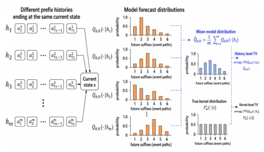

这篇论文给盲目崇拜 LLM 的金融 AI 圈泼了盆冷水。作者训练了一个 LLM 在合成限价订单簿（LOB）数据上生成事件序列，结果模型在“生成合法序列”这项及格线任务上表现完美，仿佛学会了交易规则。但一测“世界模型”就原形毕露：它根本不懂当前状态，预测充满幻觉，在纯随机数据里硬找规律。这就像学生背熟了公式，却不懂物理意义，考试蒙对几道，一做应用题就露馅。虽然用了新指标（TV 距离）量化偏差，但结论很扎心：光靠生成合法序列不够，LLM 对金融市场的隐式认知模型是残缺的。
This paper pours cold water on the financial AI circle that blindly worships LLMs. The authors trained an LLM to generate event sequences on synthetic limit order book (LOB) data, and the model performed perfectly on the threshold task of "generating valid sequences", as if it had learned trading rules. But once tested on "world models", its true form was exposed: it fundamentally does not understand the current state, predictions are full of hallucinations, and it forcibly finds patterns in purely random data. This is like a student who has memorized formulas but does not understand the physical meaning, guessing a few questions right on the exam, but getting caught out when doing application problems. Although new metrics (TV distance) were used to quantify bias, the conclusion is stinging: merely generating valid sequences is not enough; the LLM's implicit cognitive model of financial markets is incomplete.
研究动机Motivation
现有研究多关注 LLM 在确定性环境（如游戏、DFA）中的世界模型能力（Vafa et al., 2024; Liu et al., 2023），但金融 LOB 本质是随机马尔可夫过程。若 LLM 无法区分状态与历史，会导致下游预测任务（如交易决策）出现虚假可预测性。Chen & Glasserman 指出，仅验证序列合法性不足以证明模型理解动态，需评估其隐式状态表征。这直接关系到金融 AI 的可靠性，若模型在随机数据中都能“发现”规律，实盘预测必是灾难。
Existing research mostly focuses on the world model capabilities of LLMs in deterministic environments (such as games, DFA) (Vafa et al., 2024; Liu et al., 2023), but financial LOB is essentially a random Markov process. If LLMs cannot distinguish between state and history, it will lead to spurious predictability in downstream prediction tasks (such as trading decisions). Chen & Glasserman point out that verifying sequence validity alone is insufficient to prove the model understands dynamics; its implicit state representation needs to be evaluated. This directly relates to the reliability of financial AI; if the model can "discover" patterns in random data, live trading predictions will surely be a disaster.
Overall process: Build synthetic LOB dataset (random walk/shortest path) -> Train Transformer LLM -> Evaluate world model. The innovation lies in proposing evaluation metrics for random dynamics. 1. Data construction: Generate state sequences based on Markov chains, ensuring history does not affect the future (Markov property). 2. Model training: Decoder-only Transformer, task is to generate event sequences from start state to target state. 3. Core testing: Introduce Kernel-level TV to measure bias between predicted distribution and true kernel (Bias), History-level TV to measure illegal influence of history on current state prediction (Markov violation). 4. Regression testing: Predict future event streams using historical features, statistical significance reveals spurious patterns. Compared to baseline (Empirical-kernel), LLM explicitly utilizes attention mechanisms but fails to learn correct state abstraction. Additionally, the authors conducted extension experiments, verifying that model performance deteriorates when state space increases, further corroborating world model defects.

Figure 2: Illustration of history- and kernel-level TV
Experiments based on small-scale LOB settings (756 states) and extended settings (8000+ states). Baseline is Empirical-kernel. Main metrics include Valid Traversal (validity), Compression Score (state understanding), TV distance (distribution bias). Results show: LLM is near 100% on Valid Traversal, but Compression Score is extremely low (<50%), and History-level TV rises significantly with prediction step length. Regression analysis shows, LLM assigns significant weight to historical order flow features (such as buy ratio), which is spurious prediction in random data. Extension experiments confirm, the larger the state space, the weaker the LLM state abstraction ability, the more serious the problem. This indicates that in real financial markets, LLM prediction risk is extremely high.